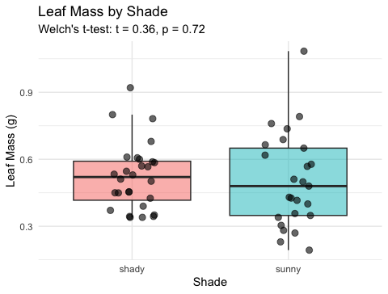

# Load all packages at the top ----------------------------
library(readxl) # reading Excel files
library(tidyverse) # data manipulation + ggplot2
library(car) # Levene's test for variance equalityLecture 10 — T-Tests II: Running & Reporting the Test
Running Welch’s t-test, reading the output, and writing it up
tidyverse
descriptive-stats
Running Welch’s two-sample t-test, decoding every line of the output, making a formal decision, and writing a proper scientific results sentence.
Where we left off (Lecture 09 — T-Tests I)
- H₀: \(\mu_{shady} = \mu_{sunny}\) · Hₐ: \(\mu_{shady} \neq \mu_{sunny}\) (two-tailed, α = 0.05)
- Normality checked — histogram + Shapiro-Wilk, both sides roughly bell-shaped for n = 10
- Variance checked — Levene’s test run (we use Welch’s either way)
- Decision: proceed with Welch’s two-sample t-test
Note
✅ Key idea from Lecture 09
Every box is checked. Today we actually run the test, decode what R hands back, and turn it into a sentence a reader can trust.
Goals for Today
- Run Welch’s two-sample t-test in R
- Read every line of the
t.test()output - Decide: reject or fail to reject H₀
- Visualize the result with the test statistics embedded
- Report results in proper scientific writing format
Tip
🖐 Try it yourself
By the end you will have a complete, reportable t-test result and a publication-style figure to go with it.
References:
- 📖 Whitlock & Schluter, Ch. 4 — Estimating with Uncertainty
- 📖 R4DS §3
Both are in the course readings/ folder.
Today’s naming:
- test objects →
_model - plots →
_plot
How to Use These Slides — Predict · Type · Run
This lecture runs in two short chunks. After each chunk you switch to the activity worksheet and type the code yourself.
For every code block, do three things:
- Predict — before it runs, say what you think the output will be
- Type it out by hand — do not copy-paste
- Run it and compare to your prediction
Note
✅ Why bother?
Guessing “above or below 0.05” before you see t.test() output forces you to reason about the test instead of just reading a number off the screen — that habit is what makes a p-value meaningful instead of magic.
Load Libraries and Data
# Load the leaf data from the data folder -----------------
tree_df <- read_excel("data/2026_06_25_tree_experiment_raw_data.xlsx")Quick Recap of Our Assumption Checks
# Rerun the assumption checks quickly for reference -----
recap_df <- tree_df %>%
group_by(side) %>%
summarize(
n = sum(!is.na(weight_g)),
mean_wt = round(mean(weight_g, na.rm = TRUE), 2),
sd_wt = round(sd(weight_g, na.rm = TRUE), 2),
se_wt = round(sd_wt / sqrt(n), 2)
)
recap_df# A tibble: 2 × 5
side n mean_wt sd_wt se_wt
<chr> <int> <dbl> <dbl> <dbl>
1 shady 10 7.8 1.03 0.33
2 sunny 10 3.8 0.79 0.25leveneTest(weight_g ~ side, data = tree_df)Levene's Test for Homogeneity of Variance (center = median)
Df F value Pr(>F)
group 1 0.6 0.4486
18 - Both groups: roughly normal (Lecture 09)
- Levene’s: recorded, but does not change our test choice
- We proceed with Welch’s (
var.equal = FALSE)
Tip
If your Worksheet 09 numbers don’t match exactly, that’s fine — small rounding differences don’t change the conclusion.
🧩 Chunk 1 of 2 · Run & Interpret
We will cover: running Welch’s t.test(), reading every line of the output, and making a formal reject / fail-to-reject decision.
Step 4 — Run the Welch’s t-Test
Note
🔮 Predict first: Write down a guess for the p-value before you run t.test() — above or below 0.05? Then see how close you were.
# Welch's two-sample t-test — unequal variance ---------
leaf_ttest_model <- t.test(
weight_g ~ side, # formula: response ~ grouping variable
data = tree_df,
var.equal = FALSE, # Welch's — no pooled variance
alternative = "two.sided" # two-tailed test
)
leaf_ttest_model
Welch Two Sample t-test
data: weight_g by side
t = 9.7333, df = 16.834, p-value = 2.514e-08
alternative hypothesis: true difference in means between group shady and group sunny is not equal to 0
95 percent confidence interval:
3.132297 4.867703
sample estimates:
mean in group shady mean in group sunny
7.8 3.8 Key arguments:
| argument | what it does |
|---|---|
weight_g ~ side |
compare weight_g between levels of side |
var.equal = FALSE |
use Welch’s correction |
alternative = "two.sided" |
two-tailed test |
The result is a model object. We decode each line of the output on the next slide.
Reading the t.test() Output
# Extract individual values from the model object ------
cat("t-statistic :", round(leaf_ttest_model$statistic, 3), "\n")t-statistic : 9.733 cat("df (Welch) :", round(leaf_ttest_model$parameter, 2), "\n")df (Welch) : 16.83 cat("p-value :", signif(leaf_ttest_model$p.value, 3), "\n")p-value : 2.51e-08 cat(
"95% CI :",
round(leaf_ttest_model$conf.int[1], 2),
"to",
round(leaf_ttest_model$conf.int[2], 2),
"g\n"
)95% CI : 3.13 to 4.87 gcat("Mean shady :", round(leaf_ttest_model$estimate[1], 2), "g\n")Mean shady : 7.8 gcat("Mean sunny :", round(leaf_ttest_model$estimate[2], 2), "g\n")Mean sunny : 3.8 gLine by line:
| output | meaning |
|---|---|
t |
our calculated t-statistic |
df |
Welch-Satterthwaite df (non-integer is normal!) |
p-value |
probability of this result if H₀ is true |
95% CI |
plausible range for the true difference in means |
mean of shady/sunny |
the two group means |
The 95% CI is the range we could expect to see if we repeated this study many times.
Step 5 — Make a Decision
# State the decision formally --------------------------
# if/else: R checks the condition and runs one of two blocks
# We will learn these formally in the functions lecture
p_val <- leaf_ttest_model$p.value
alpha <- 0.05
if (p_val < alpha) {
cat("p =", signif(p_val, 3), "< α =", alpha, "\n")
cat("Decision: REJECT H₀\n")
cat("Conclusion: leaf weight differs between sides.\n")
} else {
cat("p =", signif(p_val, 3), ">= α =", alpha, "\n")
cat("Decision: FAIL TO REJECT H₀\n")
cat("Conclusion: insufficient evidence of a difference.\n")
}p = 2.51e-08 < α = 0.05
Decision: REJECT H₀
Conclusion: leaf weight differs between sides.
Important
What a small p-value means:
If H₀ were true (no real difference), we would get a t-statistic this large or larger less than p × 100% of the time just by chance.
We set α = 0.05 before the test. If p < α, we reject H₀.
What a small p-value does NOT mean:
- It is not the probability that H₀ is true
- Statistical significance ≠ biological importance
- Report the effect size (difference in means) alongside p
→ ACTIVITY 10 Parts 1–3 now
🧩 Chunk 2 of 2 · Visualize & Report
We will cover: embedding the test result in a boxplot and writing a scientific results sentence.
Visualize the Result
# Final boxplot with all points -----------------------
leaf_box_10_plot <- tree_df %>%
ggplot(aes(x = side, y = weight_g, fill = side)) +
geom_boxplot(alpha = 0.5, outlier.shape = NA) +
geom_point(
position = position_jitter(width = 0.15, seed = 42),
alpha = 0.6,
size = 2.5
) +
labs(
title = "Leaf Weight by Tree Side",
subtitle = paste0(
"Welch's t-test: t = ",
round(leaf_ttest_model$statistic, 2),
", p = ",
signif(leaf_ttest_model$p.value, 2)
),
x = "Side of Tree",
y = "Leaf Weight (g)"
) +
theme_minimal() +
theme(legend.position = "none")
leaf_box_10_plot
Including the test result in the figure:
subtitlepulls t and p directly from the model object- R fills in the actual numbers automatically
- If you re-run with new data, the subtitle updates
Tip
Embedding test statistics in the plot subtitle saves you from copying numbers by hand — and avoids typos in your report.
How to Report Results in Science
# Compute reporting values from the model object -------
t_val <- round(leaf_ttest_model$statistic, 2)
df_val <- round(leaf_ttest_model$parameter, 1)
p_val2 <- signif(leaf_ttest_model$p.value, 2)
cat("--- Results sentence ---\n")--- Results sentence ---cat("Shady-side leaves were significantly heavier than\n")Shady-side leaves were significantly heavier thancat(
"sunny-side leaves (Welch's t-test: t(",
df_val,
") =",
t_val,
", p =",
p_val2,
").\n"
)sunny-side leaves (Welch's t-test: t( 16.8 ) = 9.73 , p = 2.5e-08 ).cat(
"Mean ± SE: shady =",
round(leaf_ttest_model$estimate[1], 2),
"±",
round(recap_df$se_wt[recap_df$side == "shady"], 2),
"g,\n"
)Mean ± SE: shady = 7.8 ± 0.33 g,cat(
" sunny =",
round(leaf_ttest_model$estimate[2], 2),
"±",
round(recap_df$se_wt[recap_df$side == "sunny"], 2),
"g.\n"
) sunny = 3.8 ± 0.25 g.Standard format:
“[Finding] (Welch’s t-test: t(df) = X.XX, p = X.XXX; mean ± SE: group1 = X.X ± X.X units, group2 = X.X ± X.X units).”
Always include:
- Test type (Welch’s t-test)
- t-statistic and df
- Exact p-value (or < 0.001)
- Group means ± SE
- Units
Never report “p = 0.000” — write “p < 0.001” instead.
Save Your Plot
# Save the plot to the figures folder ------------------
ggsave(
"figures/leaf_weight_boxplot_ttest.png",
plot = leaf_box_10_plot,
width = 5,
height = 5,
units = "in",
dpi = 300
)Your plot is now in your figures/ folder with the test statistics embedded in the subtitle — ready for a lab report or paper.
Tip
dpi = 300 is publication quality. Use it for any figure that will appear in a paper, poster, or formal report.
→ ACTIVITY 10 Parts 4–5 now
What We Learned Today
Concepts:
- Steps 4–5 of the five-step framework — run, interpret, report
- Reading output — t, df, p, CI, group means
- A results sentence needs: test name, t, df, p, means ± SE, units
R skills:
t.test(y ~ group, data, var.equal = FALSE, alternative = "two.sided")model$statistic,model$p.value,model$conf.int— extract resultspaste0(...)inlabs(subtitle = )— embed test statistics in figures
References:
- 📖 Whitlock & Schluter, Ch. 4 — Estimating with Uncertainty
- 📖 R4DS §3
Up next — Lecture 11:
- Linear regression — predicting leaf area from paper tracing mass
- Building a calibration curve with
lm() - R², residuals, and assumption checking